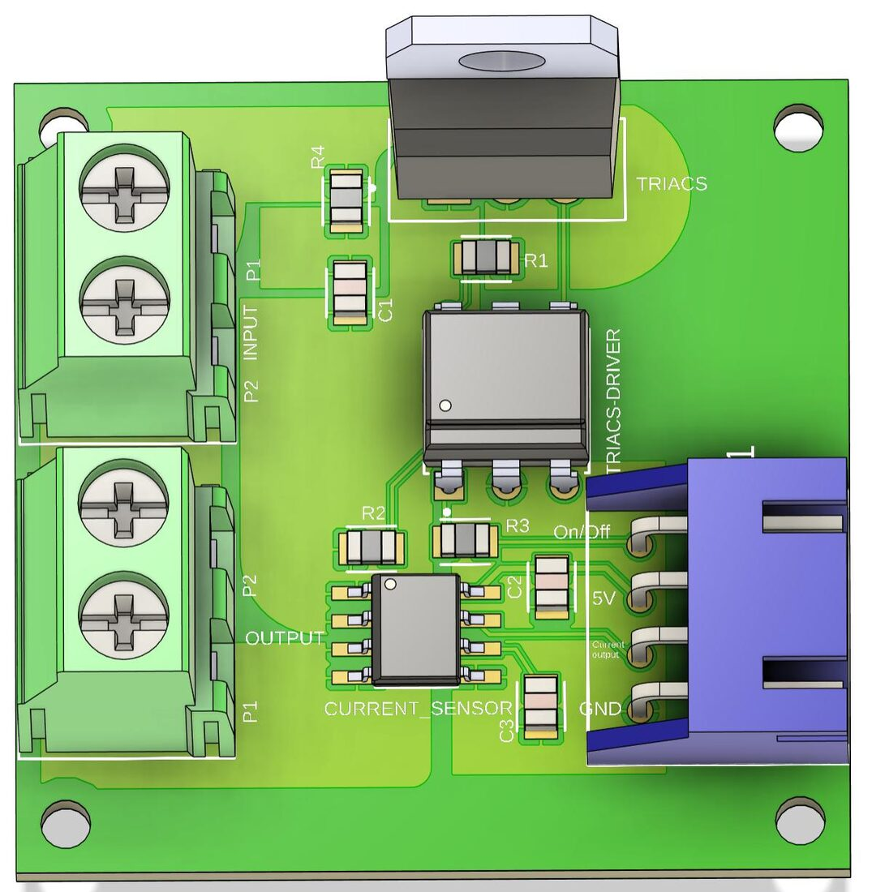
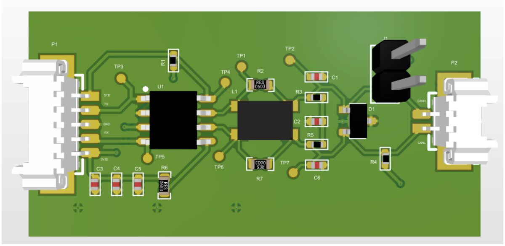

Projects

Smart Heating System (MPC)
Distributed ESP32 thermostats, four custom PCBs and Model Predictive Control. Mitacs internship and thesis.

CAN Transceiver PCB for an Autonomous Shuttle
CAN FD transceiver board with common-mode choke and ESD protection, designed in Altium Designer. Actia Fablab, ENIM.

PAC110 Packaging Machine Renewal
Migration of a packaging machine from a Siemens S5 to an S7-1200: EPLAN schematics, GRAFCET, TIA Portal and HMI. Sancella.